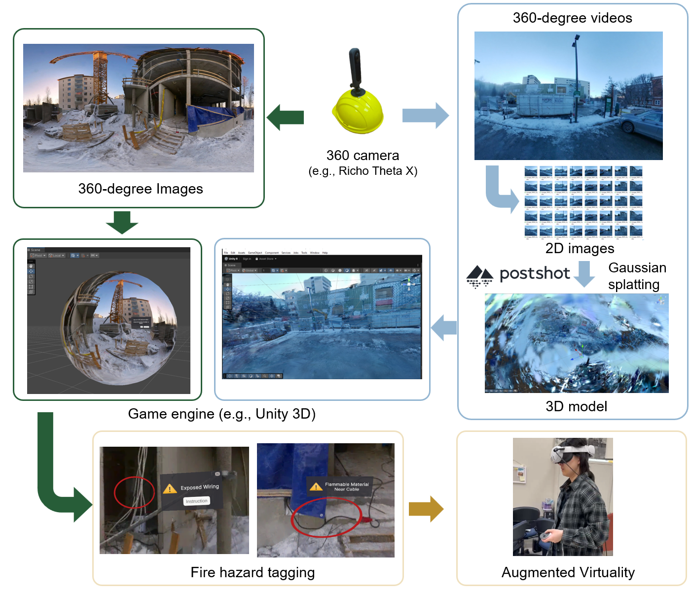

Kexin Liu
PhD Candidate
University of Alberta
VRConstruction SafetyDigital TwinBIMOptimization
Hi there! Nice to e-meet you.
I’m a PhD candidate working at the intersection of construction safety, immersive VR, and eye tracking. I’m interested in how digital technologies can help us better understand and improve safety training.
News
Grateful to present two recent studies at the ISARC 2026–IGLC 34 Joint Conference in Singapore 🎤
Happy to join Lab2Market as an Entrepreneurial Lead and explore how research ideas can move toward real-world impact💡
Honored to receive the Alberta Graduate Excellence Scholarship 🎉
Current Research

360° Image–Based VR System for Construction Fire Hazard Recognition
Built a demo VR environment using 360° construction site images/videos, 3D reconstruction, and fire hazard tagging to explore immersive fire safety training for construction sites.
Selected Previous Project Experience

Subset Simulation–based Algorithm for Multi-Resource Resource Leveling in Construction Scheduling (2019-2021)
- Model Reformation: Introduced interval rate variables to the Resource Leveling Problem, eliminating the need for complex repair operators.
- Performance Benchmarking: Validated the proposed algorithm in MATLAB, achieving higher stability and solution optimality than traditional Genetic Algorithms.
- Application Development: Developed a MATLAB GUI to streamline the optimization process for end-users.

BIM-based Evacuation Simulation for a High-Speed Railway Station Under Construction (2017)
- BIM-Evacuation Modeling: Integrated BIM data into Pathfinder for mixed-flow worker and passenger simulations.
- Scenario Evaluation: Analyzed emergency bottlenecks and flow inefficiencies under stair blockage and guided scenarios.
- Efficiency Optimization: Reduced evacuation time by 23.7s, supporting data-driven safety planning.

UAV-based 3D Reconstruction and Visualization - Bentley Institute Student Design Competition (2016)
- UAV Data Acquisition: Captured high-resolution aerial imagery for reconstruction.
- 3D Reconstruction: Used Bentley ContextCapture to perform aerial triangulation and generate high-fidelity mesh models.
- VR Integration: Used Bentley LumenRT to develop virtual reality scenes based on the 3D reconstruction model.
Lab Instructor & Teaching Assistant
CIV E 265 - Engineering Drawing and Computer Graphics
Revit Lab instructor - Fall 2023/2024/2025
CIV E 601 - Analytical Methods for Project Management
Teaching Assistant - Fall 2024
CIV E 409 - Construction Methods
Teaching Assistant - Winter 2024
Selected Awards
Alberta Graduate Excellence Scholarship
Joseph D Thompson/Zurich Canada Graduate Award in Construction Engineering and Management
Alberta Graduate Excellence Scholarship
Dr. Ayesha Khatun Memorial Graduate Award for Women in Civil Engineering
Others
Reviewer, International Symposium on Automation and Robotics in Construction (ISARC 2024-2026)
Reviewer, Engineering, Construction and Architecture Management
Session Chair, 43rd International Symposium on Automation and Robotics in Construction (ISARC 2026)